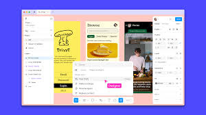
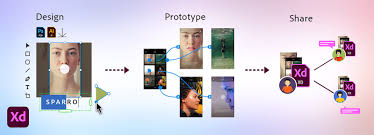

Mis Intereses

Diseño

Marketing
Arte

Cisco Networking

Figma
Photoshop

Soy Aschely Martínez, una apasionada del diseño y el marketing con un enfoque en la innovación y la creatividad. Me gusta aprender nuevas tecnologías y tendencias que me permiten desarrollar proyectos únicos y atractivos. Siempre busco trabajar en equipo y aportar mis habilidades para alcanzar objetivos comunes. Estoy emocionada por crecer en el ámbito profesional y contribuir a crear experiencias memorables. Soy una persona creativa, amable, responsable.
Desarrollar habilidades avanzadas en diseño y marketing para aplicar en proyectos innovadores que combinen creatividad y estrategia, mejorando la experiencia del usuario y la comunicación visual.
Desarrollar habilidades profesionales que permitan crecer en el ámbito laboral y personal.
Dominar herramientas y software de diseño gráfico y web como Adobe Creative Suite, Figma y otras plataformas que permitan la creación de contenido visual atractivo y funcional.
Fortalecer la capacidad de trabajar en equipo y liderazgo, aplicando habilidades interpersonales y técnicas para impulsar proyectos exitosos en el ámbito laboral.
“Disfruto colaborar y aprender de los demás. Creo que el mejor trabajo es aquel que resulta de una buena sinergia.”
“Siempre busco soluciones nuevas y mejores maneras de hacer las cosas, adelantándome a los desafíos.”
“Cumplir con mis compromisos es una prioridad. Me aseguro de que cada tarea esté hecha de la mejor manera posible.”
“Me encanta darle vida a las ideas y buscar formas originales de solucionar problemas.”
“Domino HTML para crear estructuras sólidas y semánticas en el desarrollo web.”
“Me encargo de diagnosticar y corregir problemas técnicos, asegurando que los equipos funcionen al 100%.”
“Uso CSS para diseñar interfaces visuales atractivas, con atención al detalle y enfoque en la usabilidad.”
“Excel es mi aliado para el análisis de datos y la organización de información de forma clara y eficiente.”
Creación de una página web responsive sobre mascotas y cuidados utilizando CSS y HTML en codificación con Visual Studio Code.
Desarrollo de una mano robótica con control mediante Arduino y servomotores,este proyecto fue diseñado como prototipo.
Creación de un CRUD (Crear, Leer, Actualizar, Eliminar) modal de peliculas con Html, css, JavaScript codificación en Visual Studio Code, buscando un diseño intuitivo.
El proyecto de la página web responsive sobre mascotas se desarrolló para ofrecer una plataforma accesible y atractiva para todos los amantes de los animales. La página se diseñó utilizando HTML, CSS y técnicas de diseño adaptable (responsive) para garantizar que el sitio funcione y se vea bien en cualquier dispositivo, ya sea computadora, tableta o móvil. La estructura de la web permite a los usuarios navegar fácilmente por distintas secciones, como adopción, cuidado, y consejos para mascotas. Además, se implementaron elementos visuales y botones interactivos para mejorar la experiencia de usuario y hacer que la navegación sea intuitiva y rápida. Este proyecto busca no solo informar, sino también inspirar un mayor compromiso con el bienestar animal.
El proyecto de la mano robótica con Arduino se desarrolló con el objetivo de crear una prótesis accesible y funcional, utilizando componentes asequibles y tecnología de código abierto. Con un Arduino como controlador principal y servomotores para simular el movimiento de los dedos, la mano robótica es capaz de realizar movimientos básicos que imitan los de una mano humana. A lo largo del desarrollo, el diseño de las piezas se realizó en 3D, permitiendo personalizar y optimizar cada parte para lograr mayor precisión y durabilidad. Este proyecto no solo sirvió para aplicar conocimientos de programación y electrónica, sino también para explorar soluciones accesibles que puedan beneficiar a personas en busca de opciones económicas en prótesis.
Se desarrolló una página CRUD (Crear, Leer, Actualizar, Eliminar) de películas para gestionar una base de datos de títulos de forma sencilla y eficiente. La decisión de utilizar un modal surgió para ofrecer una experiencia de usuario más dinámica y ordenada, permitiendo realizar las operaciones sin necesidad de recargar la página. Utilizamos HTML y CSS para estructurar y dar estilo a la interfaz, buscando un diseño intuitivo y visualmente atractivo. Los modales facilitan la edición rápida de los datos de cada película, como el título, el género, la duración y el año de estreno, en un entorno amigable que mantiene la coherencia y accesibilidad de la aplicación
Durante mi práctica profesional, adquirí nuevas habilidades que fueron clave para mi desarrollo, especialmente en el manejo de Excel. Aprendí sobre la importancia de asumir responsabilidades y realizar diversas tareas, enfocándome en la creación de proyecciones y reportes detallados. Me encargué de gestionar datos y realizar análisis exhaustivos, lo que me permitió comprender mejor cómo optimizar recursos y planificar eficientemente. Además, esta experiencia me enseñó a priorizar tareas y trabajar de manera precisa, mejorando mi capacidad de organización y atención al detalle.